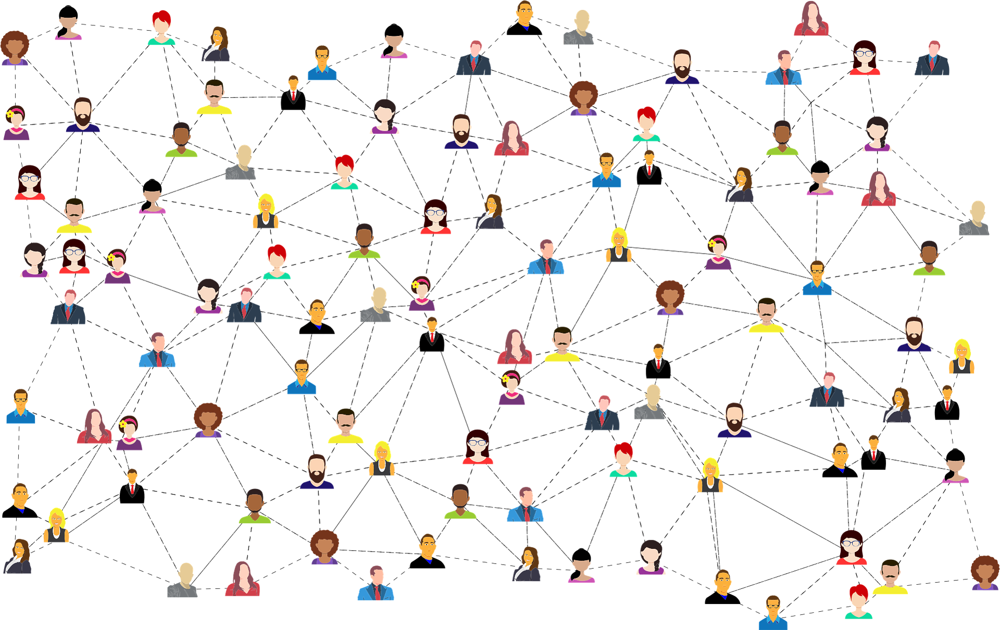

Me presento como Janelyz Bosques Lorenzo las palabras que describen mi personalidad son: Alegría, Responsabilidad, Orden, Creatividad y Servicio. Desde mi niñez disfrutaba de las bellas artes como la música, el canto y el baile, inclinación que me heredo mi padre quien se ha dedicado al mundo de la música, asi como el arte de la pintura desde pequeño. Mis pasatiempos favoritos son pasar tiempo con mi familia realizando cualquier actividad, ya sea dar un paseo, viendo una pelicula o disfrutando de una cena. En la actualidad me proyecto como una persona ocupada y comprometida, primeramente con mi familia y luego con mis metas a corto, mediano y largo plazo.
Mi interés en el mundo de la tecnología comienza cuando en un momento de mi vida me encontraba sumamente frustrada en el área profesional y deseaba un cambio radical. Fue cuando obtuve mi primer empleo en una oficina administrativa en el año 2018 que comencé a conocer las funcionalidades y las capacidades de los diferentes sistemas que eran de gran utilidad para mis labores. En ese proceso me di cuenta de que me desempeñaba muy bien en mi interacción con los sistemas y aprendía muy rápido lo que se necesitaba para realizar las tareas, así como para desarrollarlas. Luego, al pasar por varios años de experiencia en el mundo administrativo como asistente de contabilidad, donde pude desarrollar más habilidades y conocimientos, decidí cursar un bachillerato en Ciencias de la tecnología de la información en el año 2024.
